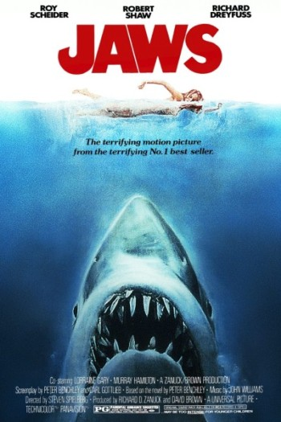
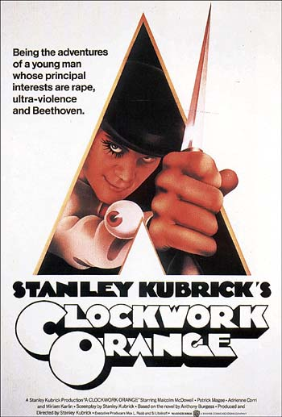
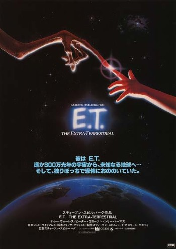

L’ours brun (Ursus arctos) est une espèce d’ours qui peut atteindre des masses de 130 à 700 kg. Le grizzli, l’ours kodiak et l’ours brun mexicain sont des sous-espèces nord-américaines de l’ours brun, l'Ours brun d'Europe la principale sous-espèce eurasienne avec de multiples autres sous-espèces comme l'Ours Isabelle. Cette espèce, qui fait localement l’objet de programmes de protection ou réintroductions, notamment en France, a été totalement exterminée au Liban, en Suisse, et dans divers pays européens, notamment dans les zones de plaine (Luxembourg, Belgique, Pays-Bas…), parfois depuis de nombreux siècles. L'espèce était originellement présente dans toute l'Europe, et même en Afrique du nord (ours de l'Atlas).
|  |
Jaws - Les dents de la merLes dents de la mer est un excellent film de divertissement qui vous fera passer un moment mémorable en famille. |
|  |
Clockword - Orange mécaniqueUn film qui détent. |
|  |
ET - L'extra-terrestreIndémodable. |
This page was coded during my training at Le Wagon.